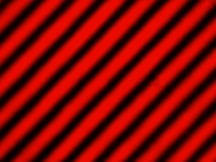

Interference of single photons
Single photons are quantum objects with very definite features. In the experiment existence of the photon and quantum random it was shown that single photons are indivisable portions and that they react completely at random. In this chapter, another quantum feature is introduced, namely that of interference. Interference can be watched in the interferometer (chapter 1-5) and at the double-slit (chapter 6).
In chapter 1, interference in the interferometer is explained with classic bright light. The same experiment is carried out in chapter 2 using single photons. In chapter 3, the quantum features interference, indivisibility and random are shown simultaneously at the single photon. The impressing of a route information and the deletion of a route information with a quantum eraser is shown in chapter 4. Chapter 5 deals, at an expert level, with the the coherence length of single photons, the energy correlation of photon pairs and the interferometry of white light. Interference and the diffraction of bright light and single photons at the double-slit are discussed in chapter 6.
Interference in the interferometer:
|
Chapter 1 |
|
|
Chapter 2: |
|
|
Chapter 3: |
|
|
Chapter 4: |
|
|
Chapter 5: |
For experts: Coherence, energy correlation and white light |
Interference and diffraction at the double-slit:
|
Chapter 6: |
Double-slit with bright light and single photons |

Interference pattern of bright light (633nm)